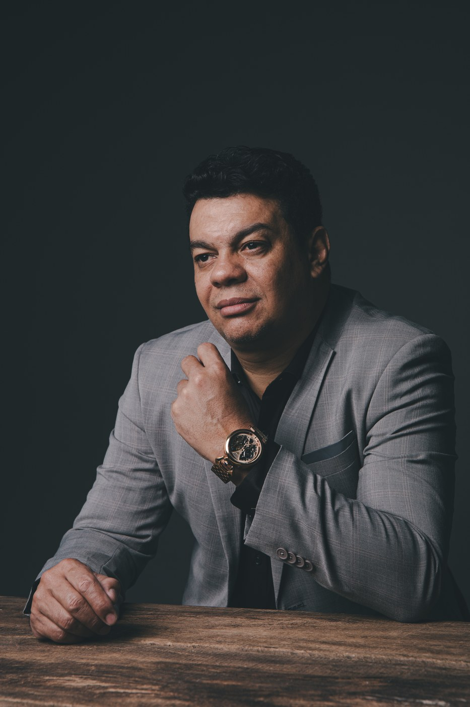
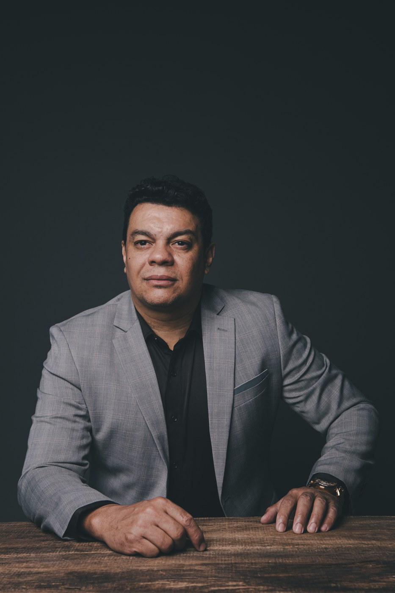
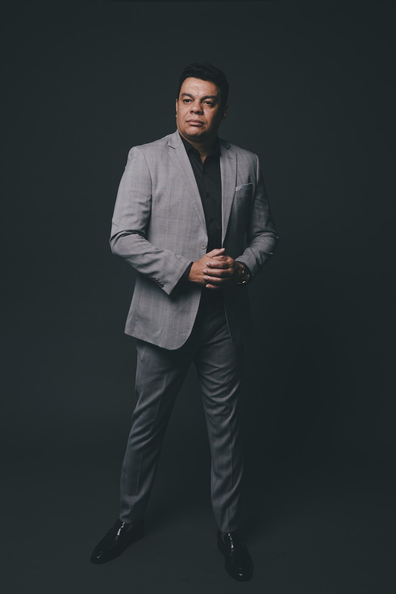

5 sinais de que você entrou na zona de estagnação.
Identifique agora, enquanto ainda é barato.
Sinal
1de 5
As vendas repetem o mesmo número
Não caíram. Também não sobem. Mês após mês o faturamento
fica no mesmo lugar, e a equipe jura que está se esforçando.
A leitura
Venda parada raramente é problema de esforço. É estratégia comercial
vencida que ninguém teve coragem de aposentar.
→

Sinal
2de 5
O dono virou o operacional
Você passa o dia resolvendo o que os outros deveriam
resolver. Aprova detalhe, apaga incêndio, corre atrás de fornecedor.
A leitura
Quem está dentro da máquina não consegue enxergar a máquina. E quem
não enxerga, não corrige.
→
Sinal
3de 5
As decisões nascem da urgência
Decide-se pelo que está gritando mais alto, não pelo que
pesa mais. Sem análise de impacto, sem ligação com um plano.
A leitura
Decisão tomada na urgência resolve o hoje e cobra o preço amanhã.
Sempre com juros.
→

Sinal
4de 5
A empresa não anda sem você
Tudo passa por você. Férias viram ansiedade. Um dia fora
e a operação trava.
A leitura
Empresa que depende do dono não é empresa. É um emprego caro, que
você mesmo criou.
→
Sinal
5de 5
Você sabe que precisa mudar
A percepção existe, e já é um bom sinal. O que falta é
clareza, método e um plano que transforme intenção em ação.
A leitura
Sem direção, adiar decisão parece prudência. Não é. É a estagnação
trabalhando a seu favor.
→

O que resolve
Estagnação não se resolve com mais esforço. Se resolve com direção.
Trabalhar mais mantém a empresa funcionando. Não a faz
crescer. O que faz crescer é direção clara, prioridade definida e um
plano que alguém acompanha de verdade.
Não existe vento favorável para quem não sabe a que porto se
dirige. Empresa parada quase nunca tem problema de vento. Tem
problema de porto.
Sêneca
→
Por que eu reconheço esses sinais
Eu quebrei sete vezes antes de aprender a ler esses sinais.
7falências antes de acertar
2.000+empresas recuperadas depois
Salve este diagnóstico. Você vai precisar dele antes do
que imagina.